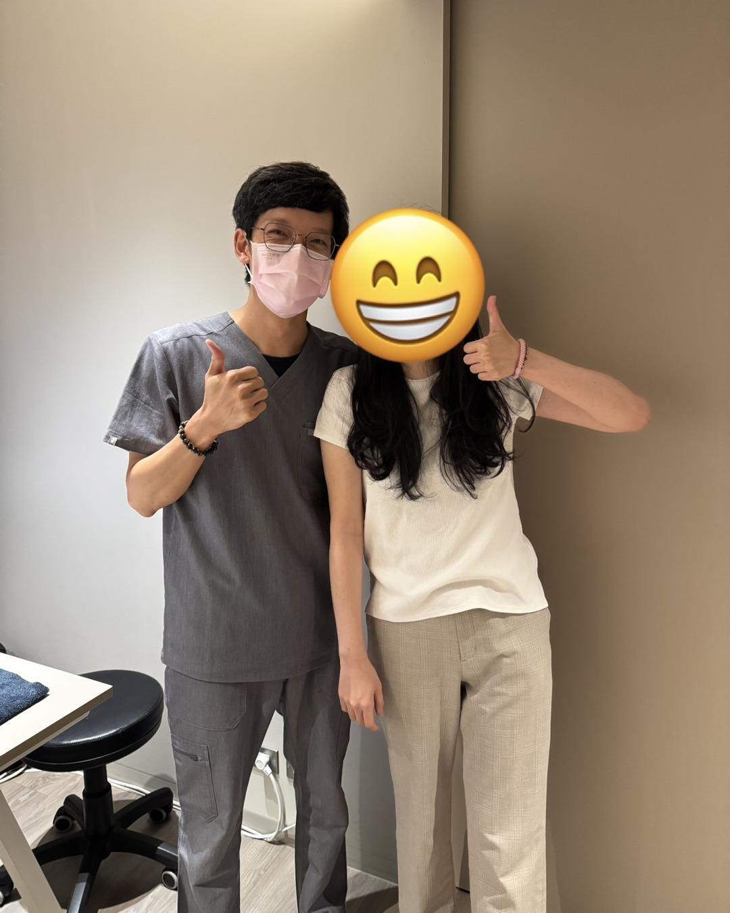
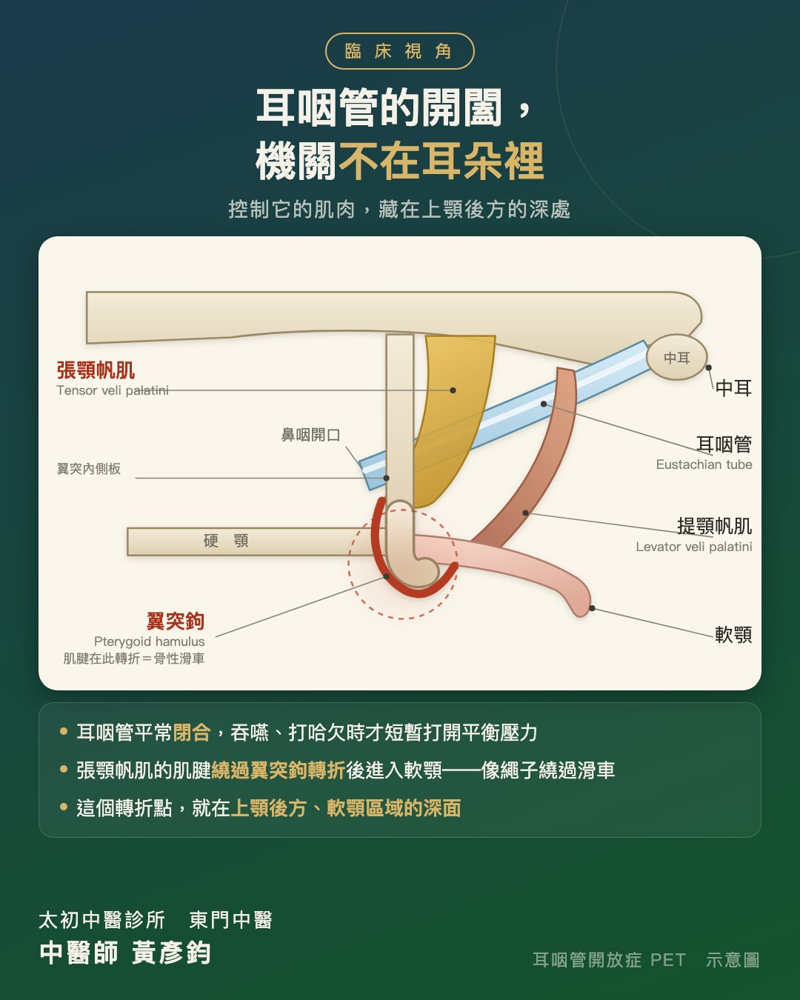

耳朵裡那扇關不緊的門－從解剖重新挖線索，處理耳咽管開放症
【耳朵裡那扇關不緊的門－從解剖重新挖線索，處理耳咽管開放症】
前陣子寫了一篇關於耳鳴的文章，收到很多回響，也因此多了不少來診的朋友。
有趣的是，其中一位，主訴是『耳悶』，不是耳鳴。
而這個耳悶，已經跟了她快三年。
〔一種很難被理解的悶〕
症狀從懷孕期間確診 COVID 之後開始。站著或坐著時會突然耳悶，有時左邊、有時右邊，也會兩邊一起悶住；兩側都悶的時候，講話的鼻音會變得很重。
她說，講話時聽得到自己聲音很大的回音；嚴重的時候，連自己的呼吸聲和心跳聲都聽得一清二楚。
最特別的是姿勢：初期只要平躺五到十分鐘，耳悶就會消失、耳朵變得通暢；但一站起來，沒多久又悶住。
除此之外，打哈欠、吞藥丸、擤鼻涕也都容易誘發；而經過有高低落差、氣壓跟著改變的地方——像是高速公路起伏的那一段，或搭捷運經過松山機場的那一段——耳朵就會悶起來。至於大家常說「捏鼻子吹氣就會通」的方法，對她來說只會更不舒服。
〔一扇關不緊的門〕
這些線索指向的診斷相當明確：耳咽管開放症（Patulous Eustachian Tube, PET）。她先前就診的耳鼻喉科醫師，也是同樣的判斷。
耳咽管平常應該是閉合的，只在吞嚥或打哈欠時短暫打開來平衡壓力。而在 PET，這根管子在該關的時候關不上——聲音便沿著這條通道往上傳，於是講話有回音、聽得見自己的呼吸與心跳。至於平躺會改善，是因為姿勢改變後周邊的靜脈充血，反而把管壁推得閉合起來。
問題是，這幾年她跑遍各科，內視鏡與聽力檢查的結果全部正常。吃藥、針灸，成效都有限。
今年開始，狀況加重：兩耳同時悶、平躺要躺更久才緩解，甚至有時候平躺也沒有用。合併嚴重的鼻音，長期下來人也變得心浮氣躁、焦慮敏感——耳悶一來就開始煩躁，真的悶起來，一整天都不舒服。
〔沒遇過，就回到基本功〕
老實說，這是我想都沒想過會遇到的病症。
沒遇過，就回歸基本功。我把 PET 相關的研究與治療方式重新查了一輪，發現在手術置入墊片之前，多半是採取保守治療——這是標準的 SOP。
但為了搏一點改善的可能，我決定換個方式切入：回到生理病理與解剖，重新挖線索。
〔機關不在耳朵裡〕
PET 的核心問題，是耳咽管的開闔失常。
而耳咽管的開闔，主要由兩條肌肉控制：張顎帆肌與提顎帆肌。其中張顎帆肌的肌腱會繞過蝶骨翼突內側板下端的「翼突鉤」轉折——這個小小的骨性滑車，就位在上顎後方、軟顎區域的深面。
換句話說，控制這扇門的機關，並不在耳朵裡。它在口腔的深處。
〔三個方向〕
抓到線索之後，治療分成三個方向：
一、高位頸椎。先解除高位頸椎的肌筋膜張力對頭顱與顏面骨的影響——這是地基，地基不穩，上面怎麼調都會被拉回去。
二、顳骨。透過拉耳法帶動顳肌，改變顳骨的張力。
三、軟顎深處。這是我認為最關鍵的一步：戴上無菌手套，經口腔內的方式，針對軟顎後方的翼突鉤區域做張力調整，目的是改變張顎帆肌與提顎帆肌的張力，進一步影響耳咽管的開闔能力。同時，也處理上顎鼻腔與蝶骨周圍的內、外翼肌。
（口腔內的操作需要專業的評估與手感，並不是可以自行嘗試的方法。）
〔一層一層鬆開〕
從這三個方向著手之後，變化是一層一層出現的。
先是耳悶的時間縮短、發作頻率下降；接著頭脹、鼻塞與鼻音漸漸消失；到後來，連吞藥丸、吞口水都不再誘發耳悶。
最近這一次，是連續療程結束後、持續追蹤的第五週。
她已經維持正常上下班的生活超過一個月。偶爾還是會有一點輕微的頭脹或耳悶，但都能在幾分鐘內自行緩解。就這段追蹤期看來，耳咽管的開闔，似乎已經回到該有的樣子。
她自己是這樣說的：
「時隔將近三年，我終於再次感受到耳朵每天都是暢通的。終於不用一直注意自己的耳朵、每天焦慮是不是又要悶住的感覺。」
〔提醒〕
必須說明的是，這是單一個案的處理經驗。耳咽管開放症的成因不只一種，並非每個人都適用同一套思路，實際仍需經專業評估後判斷。
而耳悶本身的可能原因也很多。若合併突發性的聽力下降、耳漏、劇烈眩暈或耳痛，建議先至耳鼻喉科就診，排除需要優先處理的問題。
〔最後〕
檢查都正常，不代表問題不存在。
面對沒有標準答案的病症，能依靠的還是最基本的東西——把生理、病理與解剖攤開來，一條一條重新對過，看看有沒有被漏掉的那條路。
這一次的答案，藏在一個小小的骨性滑車上。
太初中醫診所 東門中醫
中醫師 黃彥鈞
#耳咽管開放症 #耳悶 #乾針 #徒手治療

